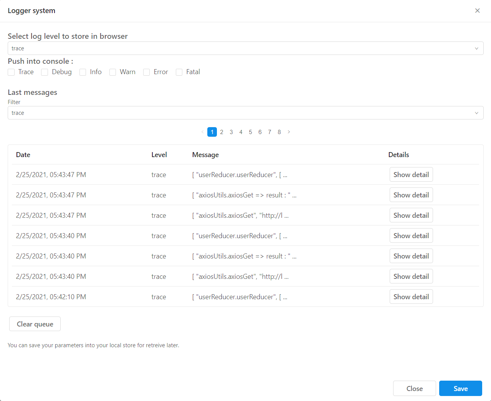

In an attempt to avoid using console.log() to log application messages, a more flexible logging system using the standard levels with options on what to display has been developed.
In the screenshot below you can view and filter all the different logs that were executed during the run. The first dropdown enables you to choose which level to store in the queue. You can also choose what to push into the browser console. Even if this selection is empty (meaning that nothing will be logged in the browser console except for native js/react/browser logs), you can still view all the logs from this screen, filter them, and view the stack trace if any. Note that choosing a level allows logs which have this exact level or lower. For example, if you choose to show "error" logs in the console, you will not be able to see "warn", "info",...etc levels but only "error" and "fatal". The same goes for selecting what to store.
